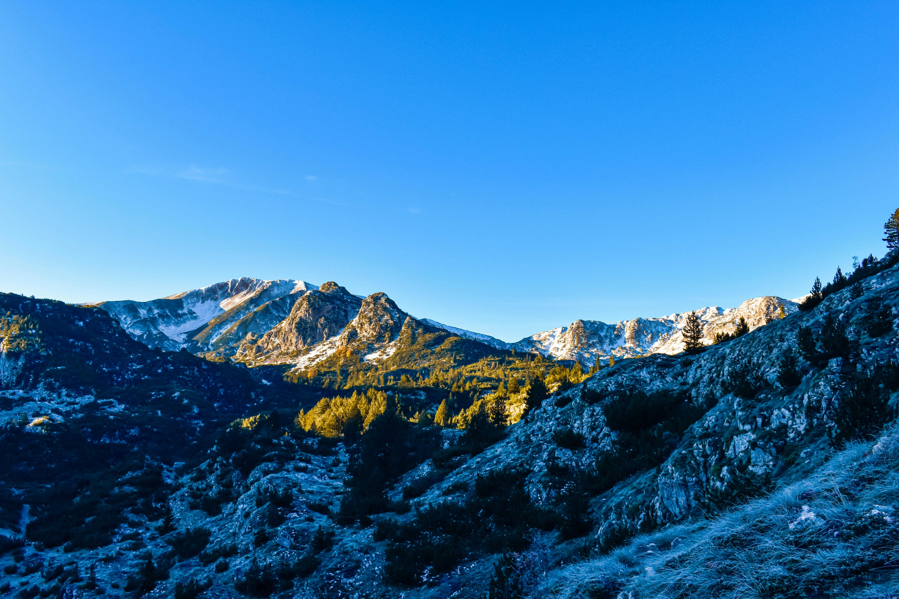
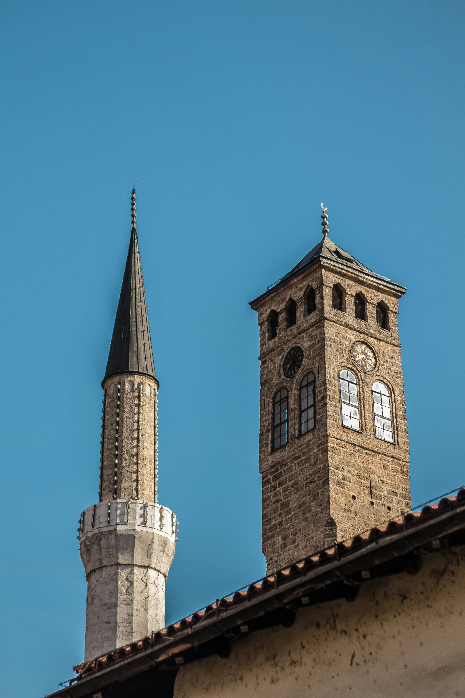
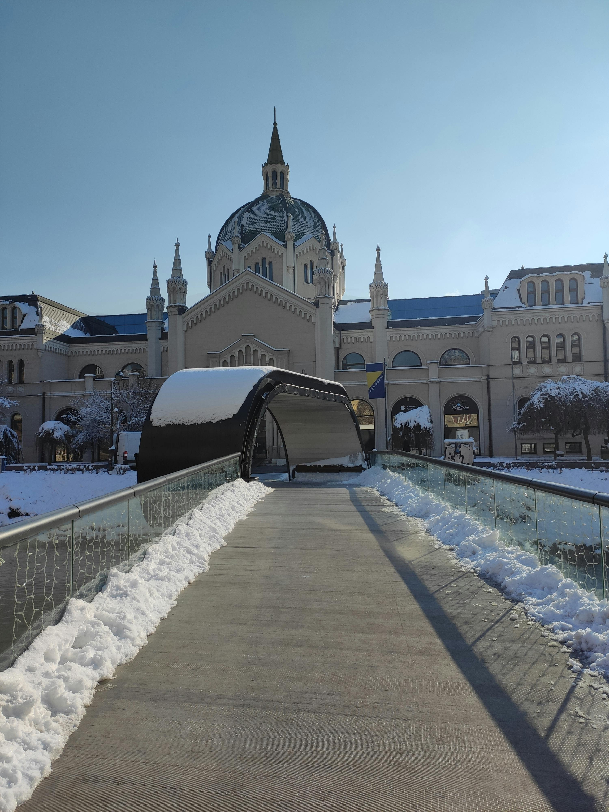
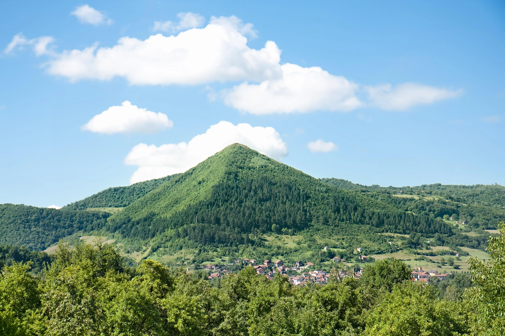
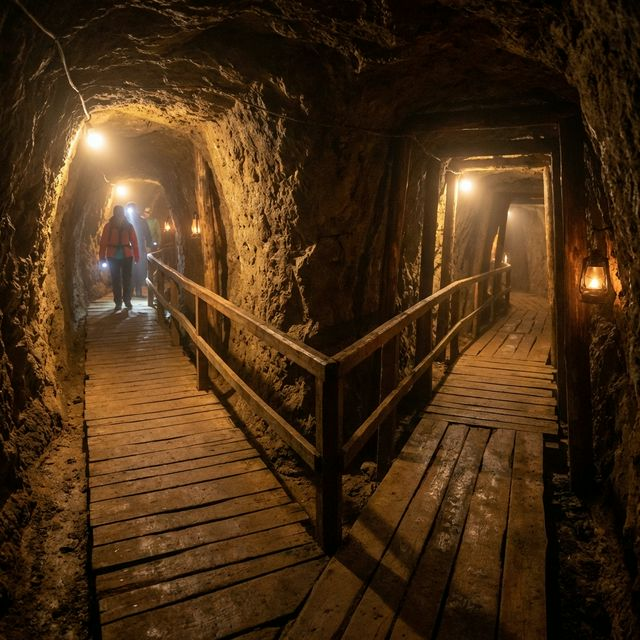
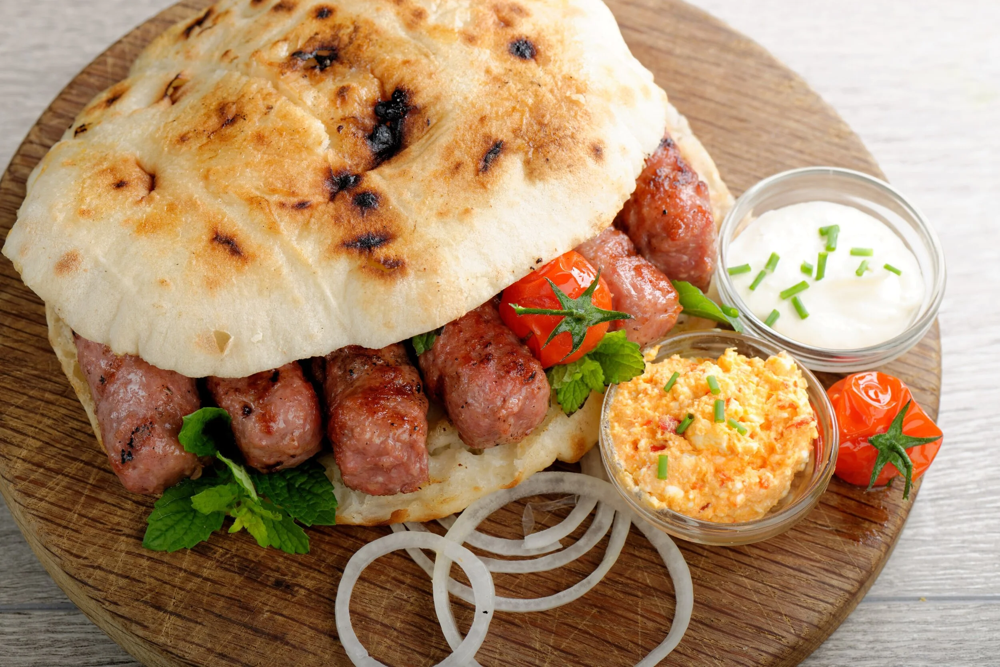
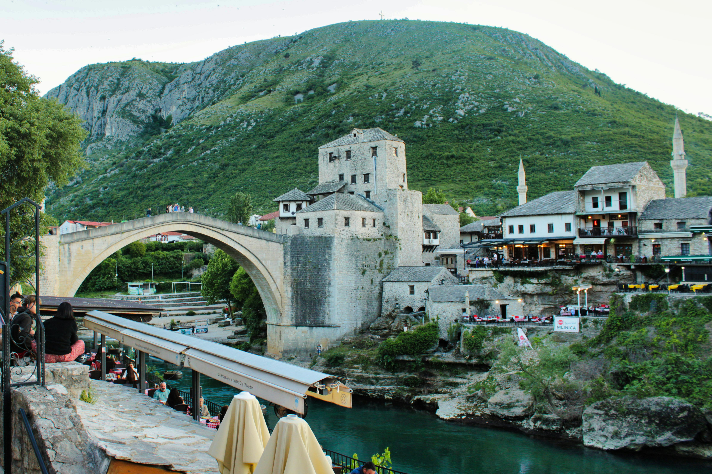

Look, I'm going to be completely honest with you. When Hannah and I booked our trip to Bosnia specifically to experience Eid, we thought we'd just be ticking off another European country. What we didn't expect was the moment our plane started descending into Sarajevo and we looked out the window to see these stunning mountains surrounding the city. I turned to Hannah and said "are we sure we're landing in Europe?" because honestly, it looked like we were approaching somewhere in Asia. The landscape was absolutely gorgeous.
After visiting 49 countries over the past four years, we've learned that sometimes the places you know least about end up surprising you the most. Bosnia was definitely one of those places. Between witnessing Eid celebrations in Sarajevo's markets, exploring underground 'healing tunnels', and meeting the guy who claims he's discovered the world's oldest pyramids, this trip turned into something way more memorable than we ever expected.
Landing in Sarajevo: Not What We Expected

The first surprise came before we even landed. As the plane descended, we got this incredible view of mountains everywhere. Like proper dramatic, beautiful mountains that you'd expect to see in Nepal or somewhere, not a 2.5 hour flight from the UK. The valley that Sarajevo sits in is surrounded by these peaks, and coming in to land gave us this first glimpse that Bosnia was going to be different from what we'd imagined.
We'd both done a fair bit of research before the trip (I handle the photos, Hannah handles making sure we don't get lost), but nothing really prepared us for how naturally beautiful it would be. Most of what you see about Bosnia online focuses on the war history or Sarajevo's architecture, which is all important, but the actual landscape is stunning and doesn't get talked about enough.
Experiencing Eid in Sarajevo: Respectfully Witnessing Something Special

We'd specifically timed our visit to Sarajevo to coincide with Eid. Neither of us are religious, but we have huge respect for all cultures and religions, and we'd both been reading about how special it is to experience Eid in a Muslim country. Since Bosnia was already on our list, we thought why not time it right to witness the celebrations?
We're really glad we did because the atmosphere was incredible. Baščaršija (the old town) was packed with locals celebrating, market stalls everywhere selling traditional sweets and treats, and the smell of fresh baklava and Bosnian coffee hitting you from every direction. I was constantly stopping to take photos of everything while Hannah was making sure we actually knew where we were going (our usual dynamic).
The call to prayer echoing around the city, mosques lit up beautifully at night, and just this general vibe of community and celebration everywhere you looked. As non-Muslim travelers, we were obviously just observers, but everyone was so welcoming and didn't mind us being there respectfully taking it all in. People were happy to explain what was going on, share food recommendations, and generally just made us feel really welcome.
"The whole city just had this buzzing energy that made it feel really special."
The Architecture: Literally Walking Through Different Centuries

This is what really blew my mind about Sarajevo. You can be standing in front of a 16th-century Ottoman mosque, turn around and there's an Austro-Hungarian building from the 1800s, and then a bit further down the road you've got these massive Yugoslav-era concrete blocks. It's like someone took different bits of European history and just threw them all together in one city.
I kept stopping every five minutes to take photos of the buildings (Hannah was very patient with this) because honestly, the architecture is stunning. The old Ottoman quarter with its narrow cobbled streets and traditional houses, the grand Austro-Hungarian city hall (which got rebuilt after being destroyed in the war), and even the brutalist stuff has this interesting appeal to it.
You can't really talk about Sarajevo without mentioning the war though. The Sarajevo Roses (those red resin-filled mortar shell impacts on the pavement) are still visible around the city, and they're a sobering reminder of what happened here not that long ago. We're both only 26, so this stuff happened in our lifetime, which makes it feel way more real than reading about conflicts from centuries ago.
The Bosnian Pyramids: Are They Real or What?

Alright, so this is where things get really weird. About 30 minutes outside Sarajevo in a town called Visoko, there's this massive hill that some people claim is actually the world's oldest and largest pyramid. And not just any pyramid, but part of a whole complex of pyramids that could rewrite human history. Sounds crazy, right? That's exactly what we thought.
So basically, in 2005, this Bosnian-American researcher called Semir Osmanagić claimed he'd discovered these pyramids. He believes they're over 12,000 years old and were built by some ancient advanced civilization. The mainstream archaeology community pretty much all says it's just natural hills with some interesting geological formations. But here's the thing, they're still doing excavations there, tourists visit from all over the world, and there's this whole infrastructure built around it.
We always book our tours through GetYourGuide, and for Visoko we went with their Sarajevo Mysteries and Secrets of Visoko Pyramids tour. Having a guide made such a difference because they could explain the whole controversy, the history, and what we were actually looking at. Plus they sorted all the transport, which was way easier than trying to figure out local buses ourselves.
The Ravne Tunnels: The 'Healing Mine' Experience

The tour also included the Ravne Tunnels, which are underneath the hill. Now this is where it gets even weirder. These tunnels are being called a 'healing mine' because apparently the air down there has negative ions or something that's supposed to be good for you. People travel from all over to just sit in these tunnels and breathe the air. There's even a little meditation area set up down there.
Going down into the tunnels is a real experience. It's about 30 meters underground, cool and damp, and they've got these walkways set up through the natural passages. Whether the 'healing' stuff is real or just placebo, I couldn't tell you, but there were definitely people down there who'd traveled specifically for the health benefits.
The Food: Super Cheap and Absolutely Delicious

Right, can we talk about the food for a minute? Because honestly, this might have been our favorite part of Bosnia. The food is incredible and costs basically nothing. Like, we're talking full meals for the price of a coffee back home.
Where to get the best ćevapi:
- Ćevabdžinica Željo: (Željo 1 and Željo 2). This is where loads of locals go and it's cheap. About €3-4 per portion.
- Ćevabdžinica Hodžić: Comes highly recommended by locals as well.
- Nune: Has been around since 1967 and is a local institution.
Best burek spots:
- Buregdžinica Sač: Hands down the best according to pretty much everyone. They bake it the traditional way over hot coals.
- Buregdžinica Bosna: Another great option in the old town, always packed with locals.
Bosnia Budget Breakdown: What It Actually Cost
Sarajevo
- Accommodation: €25-35/night
- Meals: €3-6 for ćevapi/burek
- Nicer Dinner: €10-15
- Coffee: €1-2
- Beer: €2-3
Visoko Pyramids
- GetYourGuide Tour: €35 per person
- (Includes transport, guide, entries)
Total daily budget for us as a couple: Around €50-70 all in, which is incredibly cheap for Europe.
Practical Tips for Visiting Bosnia & Herzegovina
Best time to visit: Spring (April-May) or fall (September-October) for good weather. Check the Islamic calendar if you want to experience Eid.
How long to stay: We'd recommend four to five days to really enjoy it without rushing.
Money: The currency is the Convertible Mark (BAM or KM). Cash is king here, so make sure you hit an ATM when you arrive.
Final Thoughts

After visiting 49 countries over four years, Bosnia ranks up there as one of our most memorable experiences. It's authentic, affordable, naturally beautiful, and still relatively undiscovered by mass tourism.
If you're planning a Balkans trip or looking for somewhere off the beaten path in Europe, seriously consider Bosnia. And if you can respectfully time it around Eid to witness the celebrations, even better. Just don't forget to look out the window when you're landing.